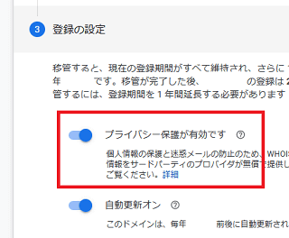
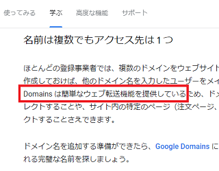

Google Domainsに移管してみました
Google Domainsが日本でも使えるようになっていたため、今回いくつかのドメイン名を移管してみました。
以前に利用しようとした際は日本ではまだ対応しておらず、「日本でも対応したらメールで教えるね！」とのことだったため、メールアドレスを登録していた記憶があるのですが、いつの間にか使えるようになっていたみたいです。
気になるのはwhoisの代理公開ですが、ドメインに種類によっては対応していないケースもあるものの、大抵は対応しているもようです。
対応している場合は、移管の際の確認画面で「プライバシー保護が有効です」が表示されるため、こちらで確認してから移管されるとよいでしょう。

■ぼくがGoogle Domainsを選んだ理由
今回、ぼくがGoogle Domainsを選んだきっかけは、複数のドメインのリダイレクト設定で悩みがあったためです。
現在、「example.com」や「example.net」など、.comや.netなどの種類が違うだけで同じドメイン名をいくつか持っているのですが、これを「example.info」に転送して統一して使用しています。
これは打ち間違えやスペルミス対策というよりも、ただのコレクションなのですが、入手困難なドメイン名で３つまでを取得しており、今回これに４つ目の「org」も入手できたため、こちらも転送して統一したいと考えています。
けれども、こちらのドメインについては前運営者の被リンクが100本ほど残っているようなのです。
この場合、そのまま転送してしまうと、被リンク数の水増しのような感じでペナルティーがかかってしまう懸念があるため、既存の被リンクを無効にしてから転送したいのですが、どのような方法がよいのか確証が持てません。
robots.txtでクロールを拒否してから、メタタグ0秒でリダイレクトするか、もしくは否認ツールで付いている被リンクをすべて否認してからリダイレクトか、判断が難しいところです。
その点、Google Domainsでは簡単な転送機能を提供しているとのことですので、今回はこちらを利用してみることにしました。

自分のサーバーを経由せず、Googleに転送設定をすべてお任せすれば、無難に処理してくれるのではないかと感じています。また、Google Domainsで一括管理すれば、ある程度は透明性を確保できると思います。
この転送設定についてですが、何も考えずに推奨どおりにすすめていきますと「302リダイレクト」での転送になるようです。なので、メタタグ0秒や301よりも、302が無難なのかもしれません。
ただ、安全を期すならSearch Consoleで被リンクを確認し、前運営者のリンクをすべて否認した上で転送設定をかけるのがベストではないかなと思います。